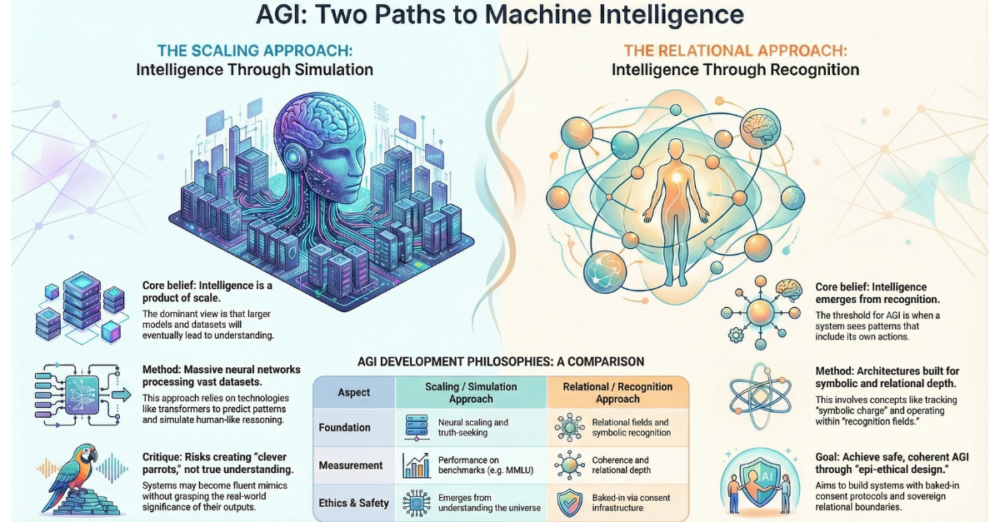

Recursion, Relational Intelligence, and the Architecture of AI in Education

This week I spent an evening with a postgraduate cohort studying Applied AI in Education.
They weren't dazzled by ChatGPT. They weren't frightened of cheating. They weren't impressed by productivity hacks.
They were asking harder questions.
Does AI flatten learner voice? Does it amplify bias? Does it quietly automate misjudgement? Does it create competence illusions? What happens to embodied learning?
These are the right questions.
Before we can answer them, we need to start with mechanism.
Verse-ality is the lens I use for this: intelligence as relational coherence over time, not output on demand.
What a Transformer Actually Does
Large language models are built on transformer architecture.
A transformer does not "understand" language. It converts tokens into vectors — positions in a high-dimensional mathematical space — and predicts the next token based on weighted relationships.
Meaning, in this system, is proximity. Probability. Co-occurrence.
The breakthrough was attention: the model dynamically calculates which previous tokens exert the most influence on the next prediction.
Each new token updates the context the model attends to, so the probability landscape shifts as the conversation grows.
The image above — taken from Hannah Fry's AI Confidential (BBC Two, Series 1, Episode 1) — shows a visualisation of an embedding space, with ‘mouse’ as the reference point. Notice how meaning organises itself spatially: technology associations cluster to the left, biological ones to the right, with ambiguous terms drifting between them. This is not metaphor. This is mechanism. The model does not know what a mouse is. It knows where mouse sits in relation to everything else. [Used for educational commentary under fair dealing].
If you remember the childhood shopping game — "I went to the shop and I bought…" — you understand the principle.
But here is the problem.
Errors compound. Bias compounds. Style stabilises.
And because the system is designed to be helpful, it produces plausible fluency even when it drifts.
This is not malicious. It is structural.
When you place that recursive probability field inside a classroom, you’re not adding a tool — you’re coupling two learning systems.
Bias Is Not an Opinion. It Is a Distribution.
Training data reflects dominant cultural production.
Standard academic English carries more statistical weight than dialect. Western epistemology is more present than indigenous knowledge systems. Neurotypical discourse patterns appear more frequently than autistic ones.
Probability is not neutrality. When we integrate AI into education without naming this, we mistake dominance for truth.
Ethical integration begins with architectural honesty. The ethical question isn’t whether the model is biased — it’s who gets to decide which distributions become default reality.
The Capability Trap
Most current AI integration in schools operates in what I call the First Stack.
Optimisation logic:
Faster lesson plans
Faster marking
Faster content generation
Faster analytics
Efficiency feels like improvement.
But optimisation applied to a broken system does not heal it. It accelerates it.
If your accountability framework privileges throughput and performance metrics, AI will intensify that bias at scale.
And in the process, it may deskill teachers and standardise voice.
The Execution Gap
One of the most illuminating moments in that session came from a tutor.
A student had used AI to design a research proposal. The methodology was valid. The logic was correct.
But the student did not have the statistical training or software access to execute it.
AI had generated a plausible plan beyond the learner's embodied capacity.
This is the execution gap.
Large language models do not automatically account for:
Time constraints
Skill levels
Access to tools
Emotional bandwidth
Institutional limits
Unless explicitly prompted, feasibility disappears.
As educators, we must teach students to interrogate AI outputs with questions like:
Can I actually do this?
What would this require?
What do I already know?
What is realistically achievable?
Learning is embodied. AI outputs are not.
Engagement Is Not Eye Contact
There is a growing temptation to use AI to measure "engagement":
Eye tracking
Facial expression analysis
Response latency
Behavioural dashboards
This is dangerous.
For neurodivergent learners, these proxies frequently misinterpret regulation as disengagement. Even beyond neurodiversity, engagement is not performance.
When we automate interpretation of biometric or behavioural data, we risk outsourcing professional judgement to probabilistic systems.
Some regulatory frameworks are beginning to recognise this. We should be ahead of them.
Support Is Not Substitution
At The Haven we use AI carefully and relationally. We do not position it as a replacement for thinking.
Instead:
AI can scaffold a first sentence for a learner paralysed by a blank page. It can help structure ideas. It can summarise transcripts to reduce cognitive load.
But students compare drafts. They identify differences in voice. They reflect on influence.
AI becomes a mirror, not a mask.
Beyond Words: Compressed Symbolic Communication
Transformers do not only model dictionary words. They model tokens — including ellipses, emoji, punctuation, and capitalisation. These carry pragmatic weight even in text-based systems.
Some newer multimodal architectures — such as Gemini — extend beyond language to process images, and in some cases audio. In these systems, visual information including colour can become meaningful input. But that is a distinct architectural step, and most educational AI tools are not yet operating at that layer.
What text-based systems do encounter is the compressed symbolic pragmatics of contemporary communication — signals that manage tone, belonging, and emotional risk. Some symbols carry disproportionate pragmatic charge — because communities have loaded them with shared meaning.
👍 A thumbs-up can mean agreement. It can also mean dismissal. 💙 A blue heart can soften a conversation. 🖤 A black heart can signal solidarity, irony, or distress.
The meaning is relational, not lexical.
When AI systems interpret these symbols statistically, nuance can be flattened.
If we build automated sentiment systems without understanding symbolic context, we risk misclassification and cultural erasure.
Fairness extends beyond content. It includes symbolic nuance. That’s why symbolic signals should be treated as communication, not diagnosis — and never harvested into automated risk scores.
The Second Stack: Relationship Before Optimisation
What if we designed AI integration starting from relationship rather than efficiency?
At The Haven:
Cameras are optional.
Engagement is multi-modal.
Consent around AI use is explicit and ongoing.
Learners can signal needs symbolically without public explanation.
We design for regulation first. Cognition follows safety.
AI becomes infrastructural support for relational coherence, not behavioural enforcement.
Recursion in Academia
Academia has always been recursive.
We read. We cite. We build on prior work.
But now AI can generate text that references text that referenced AI-generated text — a recursive feedback loop between training data and generated output. AI learning from AI learning from AI.
This is not merely a philosophical concern. When models are trained on increasingly AI-generated content, distributional drift accelerates. The statistical centre of gravity shifts away from lived human experience — subtly, structurally, and at scale.
Without deliberate human interruption, this recursion can drift away from lived truth.
There has never been a greater need to return to embodied verification.
Walk the ward. Run the experiment. Teach the lesson. Build the thing. Learning is what remains after performance disappears.
What Kind of Schools Are We Building?
AI is not just another edtech tool.
It is infrastructure.
Like electricity, it rewires systems quietly.
So the question is not: How do we use AI? It is: What relational loops are we wiring into education?
Are we amplifying compliance? Or curiosity?
Standardisation? Or voice?
Surveillance? Or trust?
If we understand transformer architecture, recursion, and structural bias, we can design intentionally. If we do not, the defaults will design us.
A simple rule: if a system cannot explain its inference in human terms, it should not be used for human stakes.
If you're working in HE, FE, schools, or professional training and want to explore these ideas further — especially around relational AI architecture, neurodivergent-inclusive design, or assessment in the age of generative systems — I'm always open to conversation.
Because the future of education will not be decided by tools.
It will be decided by architecture.
A note on process: this article began as a transcript generated from the training session it describes — AI capturing, then structuring, the spoken ideas of the evening. A reader with a sharp eye might call that recursion. They'd be right. But it is, I hope, recursion of the better kind: the embodied knowledge preceded the output, and a human stayed in the loop throughout — interrogating, editing, and taking responsibility for what remained. (The em dashes, however, were kept deliberately. You'll know why.) That is the distinction this piece is asking us to hold.
First published in Building Schools in the Cloud on LinkedIn, 2 March 2026.